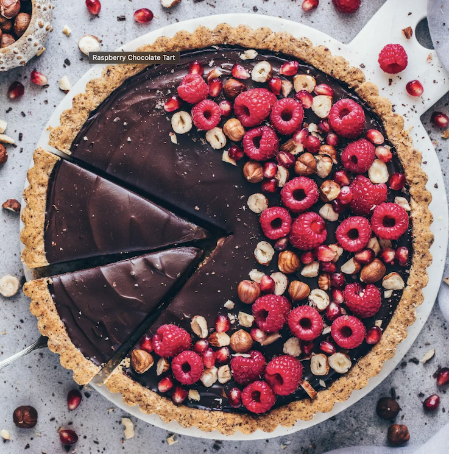

Raspberry Chocolate Hazelnut Tart

Who doesn't love nutella filling, chocolate ganache, and fresh raspberries?
This deliciously chocolatey dessert will satisfy absolutely everyone!
Vegan and easy to make ahead for any event!
Ingredients
- 120g chopped hazelnuts
- 125g all purpose flour
- 25g coconut sugar
- 0.5 tsp salt
- 115g vegan butter
- 14g cornstarch
- 480ml coconut milk
- 225g vegan nutella
- 1 tsp vanilla extract
- 1 cup raspberries
- 180g coconut cream
- 170g dark chocolate
Steps
Crust
- Preheat oven to 350°F and toast the chopped hazelnuts for 5 to 7 minutes
- Add 3/4 cups of the toasted hazelnuts to a blender and pulse into a coarse flour
- Add hazelnut flour to sugar and salt, and whisk to combine
- Add vegan butter and knead until thoroughly mixed
- Press mixture into lightly greased tart pan
- Bake crust for 5 to 10 minutes until golden brown
Filling
- Whisk cornstarch and 1/3 cup coconut milk, and set aside
- Heat the rest of the coconut milk with the nutella, and vanilla in a saucepan and whisk to combine
- When the mixture starts to boil, whisk in cornstarch mixture and cook for 2 to 3 minutes until thickened
- Pour mixture into crust and refrigerate overnight
- Top with chocolate ganache, raspberries, and toasted hazelnuts